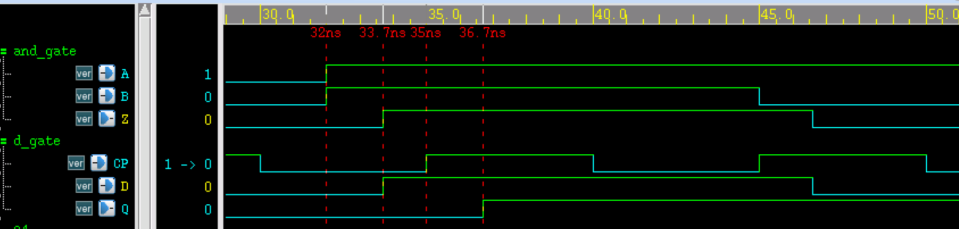
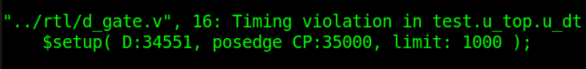

Palabras clave: retroanotación de retardos, SDF
La retroanotación de retardos es el proceso por el cual el diseñador, basándose en la tecnología de la biblioteca de celdas, la lista de conexiones a nivel de compuerta, la información de capacitancias y resistencias del diseño físico, etc., utiliza herramientas de diseño digital para anotar la información de retardo en la lista de conexiones a nivel de compuerta. Con la lista de conexiones después de la retroanotación de retardos, se puede realizar una simulación de temporización precisa, haciendo que la simulación se acerque más al circuito digital real en funcionamiento.
Proceso de retroanotación de retardos
Las simulaciones de los tutoriales anteriores son principalmente funcionales. Ya sea para diseño de IC o desarrollo de FPGA, la simulación de temporización es indispensable. En la sección «1.4 Métodos de diseño Verilog» del «Tutorial de Verilog» también se describe el flujo completo de desarrollo de diseño digital.
A continuación, se explica cómo se utiliza la retroanotación de retardos en este flujo, a modo de repaso y consolidación.
- (1) Utilizar el lenguaje de descripción de hardware para completar la descripción a nivel RTL y realizar una simulación funcional.
- (2) Aplicar ciertas restricciones de temporización a señales como el reloj, el reset y los puertos de salida, incluyendo la configuración de frecuencia de reloj, comprobaciones de temporización, retardos, etc., y utilizarlas para la síntesis lógica.
- (3) La lista de conexiones a nivel de compuerta sintetizada contiene información de retardo estimada de forma aproximada. En este punto, se pueden eliminar las informaciones de retardo como hold, recovery, removal e interconnect (líneas de interconexión) para realizar una simulación de temporización preliminar y un análisis de temporización estático (STA), verificando preliminarmente si la temporización de setup, entre otras, cumple los requisitos. Muchas empresas o personas también omiten esta simulación.
- (4) Realizar la colocación y el enrutamiento de la lista de conexiones a nivel de compuerta para convertirla en una lista de conexiones a nivel de diseño físico. Según la información de las formas geométricas de los componentes y el proceso de fabricación, se pueden extraer las capacitancias y resistencias del circuito del diseño físico, y con esta información se pueden calcular los valores de retardo en el diseño físico.
- (5) Retroanotar la información de retardo del diseño físico tras la colocación y el enrutamiento en la lista de conexiones a nivel de diseño físico, para así modificar con precisión los valores de retardo en la lista. En este momento se realiza nuevamente la simulación de temporización y STA para verificar si la temporización cumple los requisitos.
- (6) Si todas las verificaciones pasan, se puede proceder a la descarga, implementación o producción. Si hay violaciones de temporización, primero es necesario revisar la configuración de las restricciones de temporización, por ejemplo, si los parámetros de retardo, la frecuencia de reloj, las relaciones entre señales, etc., tienen problemas, y luego volver a realizar la colocación y el enrutamiento para verificar si se pueden eliminar las violaciones. Si las medidas anteriores no pueden eliminar las violaciones, es necesario regresar al inicio del diseño y optimizar la descripción RTL.
El diagrama esquemático del proceso es el siguiente; la parte resaltada en amarillo indica las instrucciones de operación que se pueden añadir en el flujo de diseño digital.

Archivo SDF
SDF (Standard Delay Format), archivo de formato de retardo estándar, se usa comúnmente para la retroanotación de retardos. Este archivo contiene todos los parámetros de tiempos de retardo y restricciones de temporización utilizados en la simulación, como IOPATH, INTERCONNECT, TIMING CHECK, etc. A continuación se presenta brevemente el archivo SDF.
Formato de archivo
El archivo SDF se declara con la palabra clave DELAYFILE e incluye información de palabras clave como DESIGN, DATE, etc.
Los parámetros de tiempo de retardo y restricciones de temporización se especifican dentro de CELL.
El archivo SDF está compuesto por la información de declaración del archivo y muchos CELL diferentes, con el siguiente formato.
(DESIGN "top")
(DATE "Love Sep 7 11:11:11 2017")
......
(TIMESCALE 1ns)
(CELL
......
)
(CELL
......
)
......
)
Tipos de retardo
Los tipos de retardo en el archivo SDF incluyen cell delay y wire delay. cell delay se refiere al retardo interno del dispositivo de la celda de puerta lógica, y wire delay se refiere al retardo causado por la interconexión entre dispositivos a través de wires.
La descripción de cell delay es la siguiente; define los retardos de subida y bajada entre los puertos de entrada (A/B) y el puerto de salida (Z) del module "and_gate", y especifica los valores mínimo y máximo.
(CELLTYPE "and_gate") //nombre del module
(INSTANCE u_and) //nombre de instanciación; si se requiere acceso a múltiples niveles, se debe especificar la jerarquía de acceso
(DELAY
(ABSOLUTE
(IOPATH A Z (1.5::1.8) (1.3::1.7)) //retardo de subida: mínimo 1.5, máximo 1.8
(IOPATH B Z (1.5::1.8) (1.3::1.7)) //retardo de bajada: mínimo 1.3, máximo 1.7
)
)
)
La descripción de wire delay es la siguiente; define los retardos de subida y bajada desde la salida de u_and hasta la entrada de u_dt en el module "top", y especifica los valores mínimo y máximo.
Generalmente, en la simulación a nivel RTL o en la lista de conexiones a nivel de compuerta sintetizada se puede ignorar el wire delay, porque en el backend se debe realizar nuevamente la colocación y el enrutamiento. La lista de conexiones después de la colocación y el enrutamiento se acerca más al circuito real, por lo que en ese momento se debe considerar el wire delay.
(CELLTYPE "top") //nombre del module
(INSTANCE) //si es el módulo de diseño de nivel superior, se puede omitir el nombre de instanciación
(DELAY
(ABSOLUTE
(INTERCONNECT u_and.Z u_dt.D (0.500::0.751) (0.400::0.551))
//(INTERCONNECT u_and/Z u_dt/D (0.500::0.751) (0.400::0.551))
//símbolo de acceso jerárquico; algunos compiladores admiten ".", otros admiten "/", hay que prestar atención aquí
)
)
)
Retardo condicional y comprobación de temporización
Dentro de CELL también se puede usar la palabra clave COND para especificar retardos condicionales.
Al mismo tiempo, también se pueden realizar comprobaciones de temporización dentro de CELL.
Un ejemplo de la especificación de retardos y la comprobación de temporización de un flip-flop D es el siguiente.
(CELLTYPE "d_gate")
(INSTANCE u_dt)
(DELAY
(ABSOLUTE
//cuando D=1, el retardo de subida es 1.3-2.3, el retardo de bajada es 1.5-2.2
(COND D==1'b1 (IOPATH CP Q (1.3::2.3) (1.5::2.2)))
//cuando D=0, el retardo de subida es 1.2-2.1, el retardo de bajada es 1.4-2.0
//aquí solo es para ilustrar el uso de COND; el parámetro de retardo de bajada cuando D=1 no es realmente utilizable
// el parámetro de retardo de subida cuando D=0 tampoco es utilizable
(COND D==1'b0 (IOPATH CP Q (1.2::2.1) (1.4::2.0)))
)
)
(TIMINGCHECK
(SETUP D (posedge CP) (0.8::1))
//comprobación de setup: si el tiempo D-CP es menor que 0.8 o 1, se imprime violation
)
)
Método de uso
Verilog proporciona la función de sistema $sdf_annotate para invocar el archivo SDF y completar el proceso de retroanotación de retardos.
El formato de uso es el siguiente:
$sdf_annotate ('sdf_file'[, module_instance] [,'sdf_configfile'][,'sdf_logfile'][,'mtm_spec'] [,'scale_factors'][,'scale_type']);
Aquí, sdf_file debe especificarse; los demás parámetros son opcionales.
Aquí solo se explican los primeros parámetros de uso común.
- sdf_file: nombre del archivo SDF, incluye la información de la ruta.
- module_instance: nombre del módulo de diseño instanciado, generalmente el nombre del módulo de diseño digital instanciado en el testbench; tenga en cuenta mantener la coherencia jerárquica con la declaración en el contenido del archivo SDF.
- log_file: registro sobre el SDF durante la compilación, para facilitar su consulta.
- mtm_spec: especifica el tipo de retardo a utilizar; las opciones incluyen MAXIMUM, MINIMUM, TYPICAL, que indican respectivamente el uso del valor máximo, mínimo o típico anotado en el archivo SDF. Por supuesto, en el ejemplo anterior del archivo SDF no se proporcionan valores típicos.
Simulación con specify
A continuación se utiliza specify para realizar una simulación de temporización simple, con el fin de compararla con la simulación de temporización que usa el archivo SDF.
La descripción lógica de una puerta AND con retardos especificados mediante specify es la siguiente:
output Z,
input A, B);
assign Z = A & B ;
specify
specparam t_rise = 1.3:1.5:1.7 ;
specparam t_fall = 1.1:1.3:1.6 ;
(A, B *> Z) = (t_rise, t_fall) ;
endspecify
endmodule
La descripción de un flip-flop D con retardos especificados mediante specify es la siguiente:
Ejemplo
output Q ,
input D, CP);
reg Q_r ;
always @(posedge CP)
Q_r <= D ;
assign Q = Q_r ;
specify
if (D == 1'b1)
(posedge CP => (Q +: D)) = (1.3:1.5:1.7, 1.1:1.4:1.9) ;
if (D == 1'b0)
(posedge CP => (Q +: D)) = (1.2:1.4:1.6, 1.0:1.3:1.8) ;
$setup(D, posedge CP, 1);
endspecify
endmodule
La descripción del módulo de nivel superior es la siguiente; su función principal es introducir el resultado de la lógica AND al flip-flop D para almacenarlo en caché.
Ejemplo
output and_out,
input in1, in2, clk);
wire res_tmp ;
and_gate u_and(res_tmp, in1, in2);
d_gate u_dt(and_out, res_tmp, clk);
endmodule
La descripción del testbench es la siguiente; durante la simulación se establece "+maxdelays" para usar los valores máximos de retardo.
Ejemplo
module test ;
wire and_out ;
reg in1, in2 ;
reg clk ;
initial begin
clk = 0 ;
forever begin
#(10/2) clk = ~clk ;
end
end
initial begin
in1 = 0 ; in2 = 0 ;
# 32 ;
in1 = 1 ; in2 = 1 ;
# 13 ;
in1 = 1 ; in2 = 0 ;
end
top u_top(
.and_out (and_out),
.in1 (in1),
.in2 (in2),
.clk (clk));
initial begin
forever begin
#100;
if ($time >= 1000) $finish ;
end
end
endmodule // test
La temporización de la simulación se muestra a continuación; de la figura se puede observar:
- (1) El retardo de subida desde las entradas A/B de la puerta AND hasta la salida Z es 33.7-32=1.7ns;
- (2) El retardo de interconexión desde la salida Z de la puerta AND hasta la entrada D del flip-flop es 0;
- (3) La diferencia de tiempo entre el terminal D y el terminal CP del flip-flop es 35-33.7=1.3ns, mayor que el 1ns establecido en la comprobación de setup, por lo que la temporización cumple los requisitos y no existe violation.
- (4) El retardo de subida desde el terminal CP del flip-flop hasta la salida Q es 36.7-35=1.7ns.
En resumen, los resultados de la simulación coinciden con los parámetros de diseño.

Simulación con SDF
Manteniendo sin cambios los parámetros involucrados en el ejemplo del archivo SDF, se integran las descripciones de múltiples CELL en un archivo SDF completo, denominado "simple_test.sdf".
Agregue las siguientes sentencias en el testbench para retroanotar la información de retardo del archivo SDF en el módulo top del diseño y realizar nuevamente la simulación de temporización.
$sdf_annotate("../rtl/simple_test.sdf", u_top, , "sdf.log", "MAXIMUM", ,);
end
La temporización de la simulación y la información impresa en el log son las siguientes; de la figura se puede observar:
- (1) El retardo de subida desde las entradas A/B de la puerta AND hasta la salida Z es 33.8-32=1.8ns;
- (2) El retardo de interconexión desde la salida Z de la puerta AND hasta la entrada D del flip-flop es 34.551-33.8=0.751ns, ya no es 0.
- (3) La diferencia de tiempo entre el terminal D del flip-flop y el terminal CP es 35-34.551=0.449ns, menor que el 1ns establecido en el setup check, por lo que el timing no cumple el requisito y se imprimirá información de que existe una violation.
- (4) El retardo de subida desde el terminal CP del flip-flop hasta la salida Q es 37.3-35=2.3ns;
En resumen, los resultados de simulación cumplen con los parámetros de diseño, pero el timing presenta una violation. La razón principal es que los datos en la entrada de la compuerta AND y el reloj del flip-flop son asíncronos y no están correlacionados. Para resolver este tipo de problemas asíncronos, consulte el siguiente capítulo «Capítulo 4: Síncrono y asíncrono».


Cabe señalar que:
En comparación con las declaraciones de bloque specify, los archivos SDF también pueden especificar el retardo de cable (wire delay) entre módulos.
En general, usar archivos SDF para especificar la información de timing de una netlist a nivel de layout es lo más cercano al circuito digital real; en comparación con la netlist rtl o la netlist de compuertas sintetizada, el timing de esta versión es el peor.
Cuando el archivo SDF especifica retardos de ruta dentro de un módulo, el bloque specify del módulo original debe conservarse, y las condiciones, tipos, etc. de los retardos especificados en el bloque specify y en el archivo SDF deben ser consistentes; los valores de retardo pueden ser diferentes. Por ejemplo, en el bloque specify se especifica un retardo incondicional:
(A => Z) = (1.3, 1.7) ;
En el archivo SDF se especifica un retardo condicional:
(COND A==1'b1&&B==1'b1 (IOPATH A Z (1.5::1.8) (1.3::1.7)))
Entonces, en la etapa de compilación se reportará la SDF Warning "IOPATH from A to Z is not found.". Los retardos establecidos por el archivo SDF no son válidos. Aquí, el archivo SDF también debería usar el método incondicional para especificar los retardos de ruta.
Esta vez, el archivo SDF fue escrito manualmente solo para presentar el archivo SDF y su uso. En la práctica, los archivos SDF son generados por los diseñadores con la ayuda de herramientas de diseño IC (por ejemplo, PrimeTime), y no hay que preocuparse demasiado por la nota anterior; solo preste atención al depurar. En general, la cantidad de netlists de compuertas en el diseño digital es enorme, y no es práctico escribir manualmente archivos SDF.
Haz clic para compartir notas
<p style="font-size:14px;">¡La nota debe ser una extensión del contenido de este artículo!</p><br> <p style="font-size:12px;"><a href="../tougao.html" target="_blank">Contribución de artículos, haga clic aquí</a></p> <p style="font-size:14px;"><a href="./runoob-user-test-intro.html" target="_blank">Cómo obtener el código de invitación de registro</a></p> <h3 class="text-muted"><i class="fa fa-info-circle" aria-hidden="true"></i> ¡Debe <a href=".." class="runoob-pop">iniciar sesión</a> antes de compartir notas!</h3> <p><a href="./runoob-user-test-intro.html" target="_blank">Cómo obtener el código de invitación de registro</a></p>